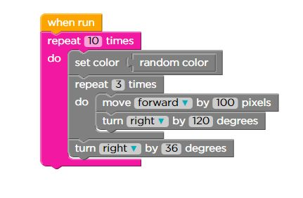
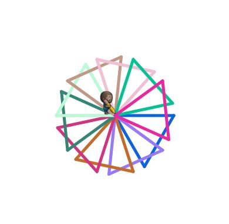

Repetitive tasks can be stored in a small group that can be “called” several times, instead of wasting space with lots of copies of the same instruction.
Removing details from a solution so that it can work for many problems
A piece of code that can be called over and over
The place in your program where you call a function you have defined
The place where you assign a series of actions to one easy-to remember name
Instructions that can be understood and followed by a machine
A placeholder for a value that can change
In Stage 7, The Artist II, we drew repeating shapes using code blocks

"Bead, knot, bead, knot, spacer, knot.
Bead, knot, bead, knot, spacer, knot.
Special charm, final knot."
Questions?
Try to fill in the skills and program to make a working example of the algorithm.
"Bead, knot, bead, knot, spacer, knot.
Bead, knot, bead, knot, spacer, knot.
Special charm, final knot."